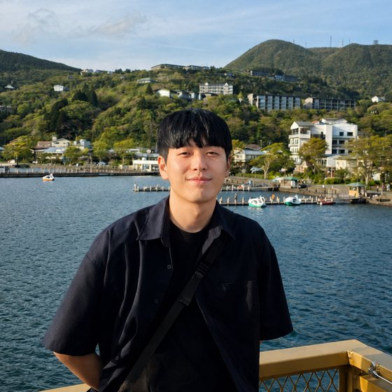

Presto Labs — Data Engineer
Nov 2025 — presentTeam Vendor Data
- Build and operate point-in-time vendor data pipelines feeding systematic equity and futures trading.
Data engineer at Presto Labs.
junhohwang98@gmail.com github/junodeveloper google scholar blog

I am currently working as a data engineer at Presto Labs and have a strong interest in quantitative trading.
On the research side, I am interested in approximation algorithms, combinatorial optimization and computational geometry.
Preprint, 2026.
In temporary tasks assignment, each job occupies one of r identical machines for a fixed time interval, adding its weight to that machine’s load while it is active. The goal is to keep the peak load — the tallest stack on any machine — as small as possible. For every fixed r, this paper gives an EPTAS: a (1+ε)-approximation running in time f(r, 1/ε)·NO(1), so ε no longer appears in the exponent as it did in the previous scheme. It also shows that the problem is strongly NP-hard for every fixed r ≥ 2, ruling out an FPTAS unless P = NP.
Proceedings of the 24th International Workshop on Approximation and Online Algorithms (WAOA 2026), L’Aquila, Italy. To appear.
The s–t path TSP asks for a cheapest route that starts at s, ends at t, and visits every vertex. In the graphic case, costs are shortest-path distances in an unweighted graph. This paper establishes a 5/4 bound for the problem when the graph is subcubic — every vertex has degree at most 3, as in the figure above.
Team Vendor Data
Gyeonggi-do, Korea · Alternative military service
Remote
Jeju, Korea